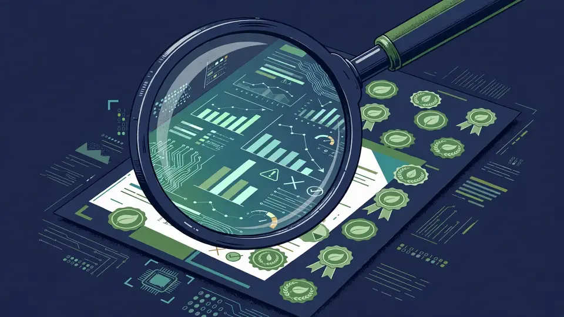

Third Partners launches 3P/AI: agentic AI that automates sustainability reporting, three weeks before California's SB 253 deadline
- Who: Third Partners, a boutique ESG and sustainability management consultancy; quotes from co-founder John Haugen, Principal and Client Director Adam Freedgood, and consulting manager Jesse Thorson.
- What: public beta of 3P/AI, agentic AI tools that automate sustainability reporting and competitor benchmarking from thousands of public data points.
- When: launched October 19, 2026; California SB 253 first emissions reports due November 10, 2026.
- Deadline context: SB 253 applies to companies with >$1B revenue doing business in California; year one covers Scope 1 and 2 emissions, Scope 3 to follow.
- Market signal: chief sustainability officers at U.S. public companies fell 10% to 193 as of July 1 — the first decline in 15 years (Weinreb Group via Trellis).
- Tools: automated double materiality assessment (B Corp / GRI), greenwashing detector, Walk vs. Talk matrix; automates EcoVadis, CDP, and Costco's 15-category Climate Data Survey responses; full Scope 1, 2, and 3 GHG reporting with no software subscription.
Boutique ESG consultancy Third Partners has opened the public beta of 3P/AI, a suite of agentic AI tools that automates sustainability reporting and shows companies how they stack up against competitors, the company announced on October 19, 2026. The pitch is aimed at one of the least sympathetic jobs in corporate life: assembling emissions reports with a skeleton crew, on a regulatory deadline that is three weeks away.
That deadline is California SB 253, whose first emissions reports are due on November 10, 2026. It applies to companies with more than $1 billion in revenue that do business in California, and the first-year filings cover Scope 1 and 2 emissions, with Scope 3 to follow. Meanwhile the teams who would normally lead that work are shrinking: the number of chief sustainability officers at U.S. public companies fell 10 percent to 193 as of July 1 — the first decline in 15 years — according to Weinreb Group data reported by Trellis, and 44% of organizations say leaders are placing greater emphasis on the business case for sustainability.
What 3P/AI actually does
Unlike software built around carbon accounting or endless data collection, Third Partners says 3P/AI is built around competitive insight. It finds, reads, and ingests thousands of publicly available data points to understand a company and its industry the way a discerning customer, buyer, or investor would. Three tools lead the beta:
- Automated double materiality assessment. Generates a data-backed assessment; add stakeholder input and publish in weeks for B Corp or GRI reporting.
- Greenwashing detector. Checks marketing copy and product claims against legal frameworks to flag hidden risks before they affect brand reputation.
- Walk vs. Talk matrix. Compares what a company says with what it does, benchmarked against competitors, and turns the gaps into board-ready action plans.
The toolkit also automates responses to EcoVadis, CDP, and retailer surveys such as Costco's 15-category Climate Data Survey, and delivers full Scope 1, 2, and 3 greenhouse gas reporting — including for SB 253 — without, the company stresses, a software subscription.

The pricing play — and the bold claim
3P/AI is available now through flexible “Guided Intelligence” tiers: a one-time Comprehensive Sustainability Insight Report, or a monthly plan supported by a dedicated Third Partners expert. Early reactions are positive, per the company: after the first three client demos, one participant asked, “How is it doing all that? Would've taken us days,” and another called it “the most exciting thing you've shown us.” Using a 3P/AI-powered workflow, a leading global wellness brand completed a TCFD climate risk report aligned with SB 261 in just a few weeks, at a fraction of what mid-sized accounting firms charge.
Third Partners is not mincing words about the incumbents. “Traditional sustainability software, including so-called enterprise greenhouse gas accounting platforms, are going to see a bloodbath of users fleeing to out-of-the-box AI tools and better methods,” said Adam Freedgood, Principal and Client Director at Third Partners. As ever with vendor forecasts, that is a sales argument dressed as inevitability — but the underlying dynamic is real: when the compliance work has to get done by finance, risk, and compliance staff who never signed up for it, the tool that arrives without a subscription and a six-month implementation has a structural advantage.
Why this matters
This is agentic AI showing up in one of the most thankless corners of enterprise software — not as a chatbot, but as the reader of the thousand-page disclosure packet. The SB 253 deadline is the forcing function; the downsized sustainability teams are the opening. Whether 3P/AI's competitive-intelligence angle — seeing your company the way a regulator or buyer would — turns out to be a durable differentiator or a launch narrative will be decided by the November 10 filings. But the direction of travel is clear: the sustainability report is becoming an AI output first and a human document second.
Frequently asked questions
What is 3P/AI and when did it launch?
3P/AI is a suite of agentic AI tools from boutique ESG consultancy Third Partners, opened to the public as a beta on October 19, 2026. It automates sustainability reporting — double materiality assessments, greenwashing checks, and competitor benchmarking — and ingests thousands of public data points to view a company the way a customer, buyer, or investor would.
Which California rules is it aimed at?
California SB 253, whose first emissions reports are due November 10, 2026. The law applies to companies with more than $1 billion in revenue that do business in California; first-year filings cover Scope 1 and 2 emissions, with Scope 3 to follow. 3P/AI also automates EcoVadis, CDP, and retailer survey responses such as Costco's 15-category Climate Data Survey, and covers full Scope 1, 2, and 3 greenhouse gas reporting.
How is it sold?
Through flexible “Guided Intelligence” tiers: a one-time Comprehensive Sustainability Insight Report, or a monthly plan supported by a dedicated Third Partners expert. The company says there is no software subscription.